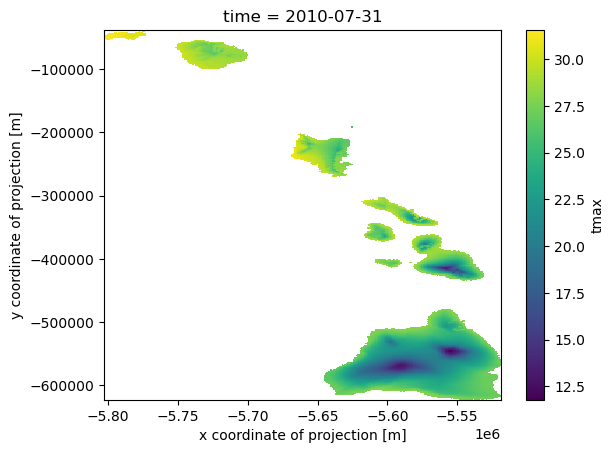

import xarray as xr
import requests
import earthaccess
import datetime as dt
import pprint
import netCDF4 as nc4
from subprocess import Popen
import platform
import os
import shutilUsing OPeNDAP to Access Data from the Earthdata Cloud Archives
Overview
This notebook demonstrates how to access OPeNDAP granules hosted inside of the Earthdata Cloud Archives. It shows how to query a cloud OPeNDAP-hosted Daymet granule using the Common Metadata Repository (CMR) API, before remotely accessing and analyzing it using Xarray and ncdump.
Review: What is OPeNDAP?
OPeNDAP, or the Open-source Project for a Network Data Access Protocol, is a data server that allows for accessing scientific datasets through the public internet. It uses Data Access Protocols (DAP) and the Hyrax Data Server, to distribute data and metadata to various clients and utilities, including Python. NASA and its Distributed Active Archive Centers (DAACs) are migrating their on-premise OPeNDAP Hyrax servers to the cloud, where granules are now organized by DAAC and collection Concept ID. This notebook will show how to search for Daymet Concept ID and OPeNDAP URLs using the CMR API, before viewing and plotting its data through several methods, including Xarray and ncdump.
Prerequisites
- A valid Earthdata Login account
- Generation of the
.netrcand.dodsrcfiles (both files will be generated in this notebook)
- Generation of the
- Python 3.7 or higher
- Xarray
- netcdf4-python
- netcdf-c version == 4.8.1, 4.9.0, or >=4.9.3
- To check the version of your library, call the following function:
nc4.getlibversion()
- To check the version of your library, call the following function:
1. Import Packages
2. Create EDL files using the earthaccess Python library
First, pass your Earthdata credentials to the earthaccess library to create the .netrc file:
auth = earthaccess.login(strategy="interactive", persist=True) You're now authenticated with NASA Earthdata Login
Using token with expiration date: 07/14/2023
Using user provided credentials for EDL
Persisting credentials to .netrcNext, run the following code to generate the .dodsrc file, if it is not already present:
homeDir = os.path.expanduser("~") + os.sep
with open(homeDir + '.dodsrc', 'w') as file:
file.write('HTTP.COOKIEJAR={}.urs_cookies\n'.format(homeDir))
file.write('HTTP.NETRC={}.netrc'.format(homeDir))
file.close()
print('Saved .dodsrc to:', homeDir)
# Set appropriate permissions for Linux/macOS
if platform.system() != "Windows":
Popen('chmod og-rw ~/.netrc', shell=True)
else:
# Copy dodsrc to working directory in Windows
shutil.copy2(homeDir + '.dodsrc', os.getcwd())
print('Copied .dodsrc to:', os.getcwd())3. Finding Data Files in NASA’s EarthData Cloud: or What’s a ConceptID?
Cloud OPeNDAP-enabled granules are organized b a unique identifier called the Concept ID. Below, we’ll demonstrate how to use NASA’s CMR API and either the Daymet dataset DOI or the shortname to obtain the Concept ID for Daymet Daily data. With this information, we can search all of NASA’s Earthdata holdings for matching data files (granules) based on our spatial area and time period of interest.
Search NASA Earthdata Holdings based on… * DOI - The Daymet daily data Digital Object Identifier * ConceptID - remember, this is NASA Earthdata’s unique ID for this dataset * Area of Interest * Time Range of Interest
3.1 Obtaining the Daymet V4 Daily data Concept ID
Using Python’s requests library, we will build and provide the URL doisearch to search NASA’s Common Metadata Repository (CMR) to acquire the concept_id unique to the Daymet V4 Daily data in NASA’s Cloud holdings. We’ll use the concept_id in a next step when we search NASA Cloud Holdings for our spatial and temporal area of interest.
# CMR API base url
cmrurl='https://cmr.earthdata.nasa.gov/search/' # define the base url of NASA's CMR API as the variable `cmrurl`
doi = '10.3334/ORNLDAAC/2129' # Daymet V4R1 DOI - define the DOI as the variable `daymet_doi`
doisearch = cmrurl + 'collections.json?doi=' + doi
print(doisearch)
concept_id = requests.get(doisearch).json()['feed']['entry'][0]['id']
print(concept_id)https://cmr.earthdata.nasa.gov/search/collections.json?doi=10.3334/ORNLDAAC/2129
C2532426483-ORNL_CLOUD4. Searching for Daymet Files using the CMR Search API
Daymet daily data files (or granules) are in netCDF4 format, and each file has one year’s worth of data. Data files are organized by variables (each for dayl, prcp, tmin, tmax, srad, swe, vp) and regions (each for us, pr, hi). Daymet filenames can be used to identify the files from continental North America (*_na_*.nc). The files from Puerto Rico and Hawaii are named as (*_pr_*.nc) and (*_hi_*.nc) respectively.
Below, we create appropriately formatted strings for our temporal range:
start_date = dt.datetime(2010, 1, 1) # specify your own start date
end_date = dt.datetime(2011, 12, 31) # specify your end start date
print(start_date,end_date,sep='\n')
dt_format = '%Y-%m-%dT%H:%M:%SZ' # format requirement for datetime search
temporal_str = start_date.strftime(dt_format) + ',' + end_date.strftime(dt_format)
print(temporal_str)2010-01-01 00:00:00
2011-12-31 00:00:00
2010-01-01T00:00:00Z,2011-12-31T00:00:00ZWe will first search all the granules for the full extent, and time period of interest (2010, 2011). For this tutorial, we set up the search parameters and download maximum temperature data (tmax).
cmr_url = 'https://cmr.earthdata.nasa.gov/search/granules'
cmr_response = requests.get(cmr_url,
params={
'concept_id': concept_id,
'temporal': temporal_str,
'page_size': 200,
},
headers={
'Accept': 'application/json'
}
)
daymet_granules = cmr_response.json()['feed']['entry']
daymet_granules_urls = []
for granule in daymet_granules:
item = next((item['href'] for item in granule['links'] if "opendap" in item["href"] and "tmax" in item["href"]), None)
if item != None:
daymet_granules_urls.append(item)
daymet_granules_urls['https://opendap.earthdata.nasa.gov/collections/C2532426483-ORNL_CLOUD/granules/Daymet_Daily_V4R1.daymet_v4_daily_hi_tmax_2010.nc',
'https://opendap.earthdata.nasa.gov/collections/C2532426483-ORNL_CLOUD/granules/Daymet_Daily_V4R1.daymet_v4_daily_na_tmax_2010.nc',
'https://opendap.earthdata.nasa.gov/collections/C2532426483-ORNL_CLOUD/granules/Daymet_Daily_V4R1.daymet_v4_daily_pr_tmax_2010.nc',
'https://opendap.earthdata.nasa.gov/collections/C2532426483-ORNL_CLOUD/granules/Daymet_Daily_V4R1.daymet_v4_daily_hi_tmax_2011.nc',
'https://opendap.earthdata.nasa.gov/collections/C2532426483-ORNL_CLOUD/granules/Daymet_Daily_V4R1.daymet_v4_daily_pr_tmax_2011.nc',
'https://opendap.earthdata.nasa.gov/collections/C2532426483-ORNL_CLOUD/granules/Daymet_Daily_V4R1.daymet_v4_daily_na_tmax_2011.nc']5. Open and Subset Granules Using netcdf4-python and the DAP4 Protocol
The “DAP4” protocol is included with Cloud OPeNDAP-enabled granules. This allows for certain granules to have their variables organized into group hierarchies, complex variable names retrieved, and to further distinguish dataset variables between each other. Because of this difference over on-premises OPeNDAP, which used DAP2, certain programming libraries may require updated methods for accessing Cloud OPeNDAP-enabled granules.
It is required to use the dap4:// protocol in the URL instead of https:// for the netcdf4-python library. Before the first granule in the list is accessed, we first replace the URL protocol in the string, then view its metadata using the netcdf4-python library.
NOTE: Occasionally, due to server load, “BES Connection” errors may appear while opening a Cloud OPeNDAP granule. These errors do not affect granule access.
#dap4_url = daymet_granules_urls.replace("https://", "dap4://")
dap4_url = [url.replace("https://", "dap4://") for url in daymet_granules_urls]
f = nc4.Dataset(dap4_url[0], 'r') # HI in 2010
f<class 'netCDF4._netCDF4.Dataset'>
root group (NETCDF4 data model, file format DAP4):
start_year: 2010
source: Daymet Software Version 4.0
Version_software: Daymet Software Version 4.0
Version_data: Daymet Data Version 4.0
Conventions: CF-1.6
citation: Please see http://daymet.ornl.gov/ for current Daymet data citation information
references: Please see http://daymet.ornl.gov/ for current information on Daymet references
dimensions(sizes): y(584), x(284), time(365), nv(2)
variables(dimensions): float32 y(y), float32 lon(y, x), float32 lat(y, x), float32 time(time), float32 x(x), float32 tmax(time, y, x), int16 lambert_conformal_conic(), float32 time_bnds(time, nv), int16 yearday(time)
groups: 6. Open and Subset Granules Using Xarray
Xarray is a commonly-used and widely supported Python library used for accessing and analyzing remotely-hosted datasets. Below, we use the open_dataset() function to access our first Cloud OPeNDAP Daymet granule, and to view its metadata. Both the dap4:// and https:// protocols may be passed into the Xarray library, and subsetting must be done using Xarray.
ds = xr.open_dataset(daymet_granules_urls[0]) # HI in 2010
ds<xarray.Dataset>
Dimensions: (y: 584, x: 284, time: 365, nv: 2)
Coordinates:
* y (y) float32 -3.9e+04 -4e+04 ... -6.21e+05 -6.22e+05
lon (y, x) float32 ...
lat (y, x) float32 ...
* time (time) datetime64[ns] 2010-01-01T12:00:00 ... 20...
* x (x) float32 -5.802e+06 -5.801e+06 ... -5.519e+06
Dimensions without coordinates: nv
Data variables:
tmax (time, y, x) float32 ...
lambert_conformal_conic int16 -32767
time_bnds (time, nv) datetime64[ns] 2010-01-01 ... 2011-01-01
yearday (time) int16 1 2 3 4 5 6 ... 361 362 363 364 365
Attributes:
start_year: 2010
source: Daymet Software Version 4.0
Version_software: Daymet Software Version 4.0
Version_data: Daymet Data Version 4.0
Conventions: CF-1.6
citation: Please see http://daymet.ornl.gov/ f...
references: Please see http://daymet.ornl.gov/ f...
build_dmrpp_metadata.build_dmrpp: 3.20.13-563
build_dmrpp_metadata.bes: 3.20.13-563
build_dmrpp_metadata.libdap: libdap-3.20.11-193
build_dmrpp_metadata.configuration: \n# TheBESKeys::get_as_config()\nAll...
build_dmrpp_metadata.invocation: build_dmrpp -c /tmp/bes_conf_p6Fo -f...xarray.Dataset
- y: 584
- x: 284
- time: 365
- nv: 2
- y(y)float32-3.9e+04 -4e+04 ... -6.22e+05
- units :
- m
- long_name :
- y coordinate of projection
- standard_name :
- projection_y_coordinate
array([ -39000., -40000., -41000., ..., -620000., -621000., -622000.], dtype=float32) - lon(y, x)float32...
- units :
- degrees_east
- long_name :
- longitude coordinate
- standard_name :
- longitude
[165856 values with dtype=float32]
- lat(y, x)float32...
- units :
- degrees_north
- long_name :
- latitude coordinate
- standard_name :
- latitude
[165856 values with dtype=float32]
- time(time)datetime64[ns]2010-01-01T12:00:00 ... 2010-12-...
- standard_name :
- time
- bounds :
- time_bnds
- long_name :
- 24-hour day based on local time
array(['2010-01-01T12:00:00.000000000', '2010-01-02T12:00:00.000000000', '2010-01-03T12:00:00.000000000', ..., '2010-12-29T12:00:00.000000000', '2010-12-30T12:00:00.000000000', '2010-12-31T12:00:00.000000000'], dtype='datetime64[ns]') - x(x)float32-5.802e+06 ... -5.519e+06
- units :
- m
- long_name :
- x coordinate of projection
- standard_name :
- projection_x_coordinate
array([-5802250., -5801250., -5800250., ..., -5521250., -5520250., -5519250.], dtype=float32)
- tmax(time, y, x)float32...
- long_name :
- daily maximum temperature
- units :
- degrees C
- grid_mapping :
- lambert_conformal_conic
- cell_methods :
- area: mean time: maximum
[60537440 values with dtype=float32]
- lambert_conformal_conic()int16...
- grid_mapping_name :
- lambert_conformal_conic
- longitude_of_central_meridian :
- -100.0
- latitude_of_projection_origin :
- 42.5
- false_easting :
- 0.0
- false_northing :
- 0.0
- standard_parallel :
- [25. 60.]
- semi_major_axis :
- 6378137.0
- inverse_flattening :
- 298.257223563
array(-32767, dtype=int16)
- time_bnds(time, nv)datetime64[ns]...
array([['2010-01-01T00:00:00.000000000', '2010-01-02T00:00:00.000000000'], ['2010-01-02T00:00:00.000000000', '2010-01-03T00:00:00.000000000'], ['2010-01-03T00:00:00.000000000', '2010-01-04T00:00:00.000000000'], ..., ['2010-12-29T00:00:00.000000000', '2010-12-30T00:00:00.000000000'], ['2010-12-30T00:00:00.000000000', '2010-12-31T00:00:00.000000000'], ['2010-12-31T00:00:00.000000000', '2011-01-01T00:00:00.000000000']], dtype='datetime64[ns]') - yearday(time)int16...
- long_name :
- day of year (DOY) starting with day 1 on Januaray 1st
array([ 1, 2, 3, ..., 363, 364, 365], dtype=int16)
- start_year :
- 2010
- source :
- Daymet Software Version 4.0
- Version_software :
- Daymet Software Version 4.0
- Version_data :
- Daymet Data Version 4.0
- Conventions :
- CF-1.6
- citation :
- Please see http://daymet.ornl.gov/ for current Daymet data citation information
- references :
- Please see http://daymet.ornl.gov/ for current information on Daymet references
- build_dmrpp_metadata.build_dmrpp :
- 3.20.13-563
- build_dmrpp_metadata.bes :
- 3.20.13-563
- build_dmrpp_metadata.libdap :
- libdap-3.20.11-193
- build_dmrpp_metadata.configuration :
- # TheBESKeys::get_as_config() AllowedHosts=^https?:\/\/ BES.Catalog.catalog.FollowSymLinks=Yes BES.Catalog.catalog.RootDirectory=/tmp/tmp9fn76qqj/ BES.Catalog.catalog.TypeMatch=dmrpp:.*\.(dmrpp)$; BES.Catalog.catalog.TypeMatch+=h5:.*(\.bz2|\.gz|\.Z)?$; BES.Data.RootDirectory=/dev/null BES.LogName=./bes.log BES.UncompressCache.dir=/tmp/hyrax_ux BES.UncompressCache.prefix=ux_ BES.UncompressCache.size=500 BES.module.cmd=/usr/lib64/bes/libdap_xml_module.so BES.module.dap=/usr/lib64/bes/libdap_module.so BES.module.dmrpp=/usr/lib64/bes/libdmrpp_module.so BES.module.fonc=/usr/lib64/bes/libfonc_module.so BES.module.h5=/usr/lib64/bes/libhdf5_module.so BES.module.nc=/usr/lib64/bes/libnc_module.so BES.modules=dap,cmd,h5,dmrpp,nc,fonc FONc.ClassicModel=false FONc.NoGlobalAttrs=true H5.EnableCF=false H5.EnableCheckNameClashing=true
- build_dmrpp_metadata.invocation :
- build_dmrpp -c /tmp/bes_conf_p6Fo -f /tmp/tmp9fn76qqj//daymet_v4_daily_hi_tmax_2010.nc -r /tmp/dmr__CDJLKz -u OPeNDAP_DMRpp_DATA_ACCESS_URL -M
7. Resample and Plot tmax
Below, we will resample the tmax variable and calculate the monthly mean using Xarray’s built-in functions. Then, we will plot the monthly tmax mean for the month of July in Hawaii for 2010.
# Monthly resample
monthly_tmax_mean = ds['tmax'].resample(time="M").mean()
monthly_tmax_mean<xarray.DataArray 'tmax' (time: 12, y: 584, x: 284)>
array([[[nan, nan, nan, ..., nan, nan, nan],
[nan, nan, nan, ..., nan, nan, nan],
[nan, nan, nan, ..., nan, nan, nan],
...,
[nan, nan, nan, ..., nan, nan, nan],
[nan, nan, nan, ..., nan, nan, nan],
[nan, nan, nan, ..., nan, nan, nan]],
[[nan, nan, nan, ..., nan, nan, nan],
[nan, nan, nan, ..., nan, nan, nan],
[nan, nan, nan, ..., nan, nan, nan],
...,
[nan, nan, nan, ..., nan, nan, nan],
[nan, nan, nan, ..., nan, nan, nan],
[nan, nan, nan, ..., nan, nan, nan]],
[[nan, nan, nan, ..., nan, nan, nan],
[nan, nan, nan, ..., nan, nan, nan],
[nan, nan, nan, ..., nan, nan, nan],
...,
...
...,
[nan, nan, nan, ..., nan, nan, nan],
[nan, nan, nan, ..., nan, nan, nan],
[nan, nan, nan, ..., nan, nan, nan]],
[[nan, nan, nan, ..., nan, nan, nan],
[nan, nan, nan, ..., nan, nan, nan],
[nan, nan, nan, ..., nan, nan, nan],
...,
[nan, nan, nan, ..., nan, nan, nan],
[nan, nan, nan, ..., nan, nan, nan],
[nan, nan, nan, ..., nan, nan, nan]],
[[nan, nan, nan, ..., nan, nan, nan],
[nan, nan, nan, ..., nan, nan, nan],
[nan, nan, nan, ..., nan, nan, nan],
...,
[nan, nan, nan, ..., nan, nan, nan],
[nan, nan, nan, ..., nan, nan, nan],
[nan, nan, nan, ..., nan, nan, nan]]], dtype=float32)
Coordinates:
* time (time) datetime64[ns] 2010-01-31 2010-02-28 ... 2010-12-31
* y (y) float32 -3.9e+04 -4e+04 -4.1e+04 ... -6.21e+05 -6.22e+05
lon (y, x) float32 ...
lat (y, x) float32 ...
* x (x) float32 -5.802e+06 -5.801e+06 -5.8e+06 ... -5.52e+06 -5.519e+06xarray.DataArray
'tmax'
- time: 12
- y: 584
- x: 284
- nan nan nan nan nan nan nan nan ... nan nan nan nan nan nan nan nan
array([[[nan, nan, nan, ..., nan, nan, nan], [nan, nan, nan, ..., nan, nan, nan], [nan, nan, nan, ..., nan, nan, nan], ..., [nan, nan, nan, ..., nan, nan, nan], [nan, nan, nan, ..., nan, nan, nan], [nan, nan, nan, ..., nan, nan, nan]], [[nan, nan, nan, ..., nan, nan, nan], [nan, nan, nan, ..., nan, nan, nan], [nan, nan, nan, ..., nan, nan, nan], ..., [nan, nan, nan, ..., nan, nan, nan], [nan, nan, nan, ..., nan, nan, nan], [nan, nan, nan, ..., nan, nan, nan]], [[nan, nan, nan, ..., nan, nan, nan], [nan, nan, nan, ..., nan, nan, nan], [nan, nan, nan, ..., nan, nan, nan], ..., ... ..., [nan, nan, nan, ..., nan, nan, nan], [nan, nan, nan, ..., nan, nan, nan], [nan, nan, nan, ..., nan, nan, nan]], [[nan, nan, nan, ..., nan, nan, nan], [nan, nan, nan, ..., nan, nan, nan], [nan, nan, nan, ..., nan, nan, nan], ..., [nan, nan, nan, ..., nan, nan, nan], [nan, nan, nan, ..., nan, nan, nan], [nan, nan, nan, ..., nan, nan, nan]], [[nan, nan, nan, ..., nan, nan, nan], [nan, nan, nan, ..., nan, nan, nan], [nan, nan, nan, ..., nan, nan, nan], ..., [nan, nan, nan, ..., nan, nan, nan], [nan, nan, nan, ..., nan, nan, nan], [nan, nan, nan, ..., nan, nan, nan]]], dtype=float32) - time(time)datetime64[ns]2010-01-31 ... 2010-12-31
array(['2010-01-31T00:00:00.000000000', '2010-02-28T00:00:00.000000000', '2010-03-31T00:00:00.000000000', '2010-04-30T00:00:00.000000000', '2010-05-31T00:00:00.000000000', '2010-06-30T00:00:00.000000000', '2010-07-31T00:00:00.000000000', '2010-08-31T00:00:00.000000000', '2010-09-30T00:00:00.000000000', '2010-10-31T00:00:00.000000000', '2010-11-30T00:00:00.000000000', '2010-12-31T00:00:00.000000000'], dtype='datetime64[ns]') - y(y)float32-3.9e+04 -4e+04 ... -6.22e+05
- units :
- m
- long_name :
- y coordinate of projection
- standard_name :
- projection_y_coordinate
array([ -39000., -40000., -41000., ..., -620000., -621000., -622000.], dtype=float32) - lon(y, x)float32...
- units :
- degrees_east
- long_name :
- longitude coordinate
- standard_name :
- longitude
[165856 values with dtype=float32]
- lat(y, x)float32...
- units :
- degrees_north
- long_name :
- latitude coordinate
- standard_name :
- latitude
[165856 values with dtype=float32]
- x(x)float32-5.802e+06 ... -5.519e+06
- units :
- m
- long_name :
- x coordinate of projection
- standard_name :
- projection_x_coordinate
array([-5802250., -5801250., -5800250., ..., -5521250., -5520250., -5519250.], dtype=float32)
# Xarray plotting
monthly_tmax_mean[6,:,:].plot()<matplotlib.collections.QuadMesh at 0x7fdaba88de50>